在 Windows 上安裝 EverQuest for the Pocket PC
這篇教學用微軟 Device Emulator 模擬 Pocket PC 2003，在 Windows 上安裝並執行《EverQuest for the Pocket PC》Episode 1。全程不用寫程式，所有截圖都來自實際操作。
這是「完整模擬整台機器」的作法，需要 Pocket PC 的 ROM。PocketPC3630 本身不需要 ROM，在網頁上匯入遊戲的 CAB 就能玩；兩種方法可以互相對照。
開始之前
你需要兩個檔案，以及遊戲的註冊碼。
| 項目 | 檔案 | 說明 |
|---|---|---|
| 模擬器 | ppc_emulator_portable.zip | 內含 devemu.exe 與 ppc2003.bin |
| 遊戲 | PocketEQPPC2002.STRONGARM.cab | 在遊戲光碟根目錄 |
| 註冊碼 | 你自己的註冊碼 | 第一次啟動遊戲時要輸入 |
ROM 要選對。遊戲需要 ROM 內建的 mfcce300.dll，所以不是每個 ROM 都能跑。
| ROM | 內含 mfcce300.dll | 適用性 |
|---|---|---|
ppc2003.bin | 有 | 本教學使用，已實測 |
wm5.BIN | 有 | 可作為備選，尚未實測 |
wce6.bin | 無 | 不能用 |
第一步：準備檔案
- 把
ppc_emulator_portable.zip解壓到任一資料夾，會得到ppc_emulator_portable。 - 從光碟映像取出
PocketEQPPC2002.STRONGARM.cab。 - 把 CAB 放進
ppc_emulator_portable\SD。這個資料夾會在模擬器中變成 Storage Card。
光碟上的 Setup.exe 不需要執行，這裡直接用 CAB 安裝。
第二步：啟動模擬器
在 ppc_emulator_portable 資料夾開啟命令提示字元，執行：
devemu.exe images\ppc2003.bin /memsize 128 /sharedfolder SD /skin skins\Pocket_PC\PPC_2003_SE.xml不要用附帶的 run_save.bat。它還原存檔時會卡在 Restoring State。上面的指令是冷開機，等待約 40 秒就會看到桌面。
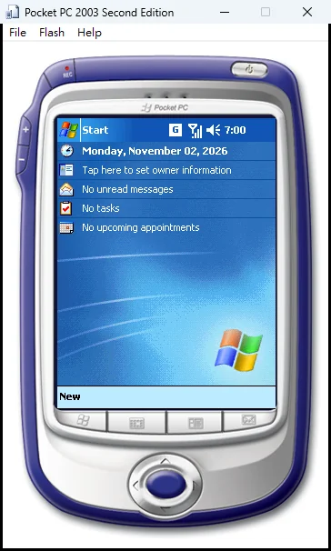
滑鼠就是觸控筆：點一下是輕觸，按住不放約 2 秒會出現選單。
第三步：安裝遊戲
- 點左上角的 Start，再點 Programs。
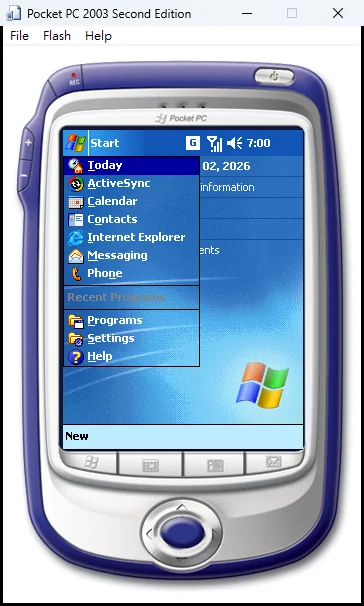
- 點 File Explorer。
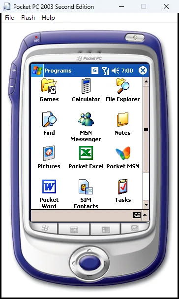
- 點底部工具列中間的記憶卡圖示，切換到 Storage Card。
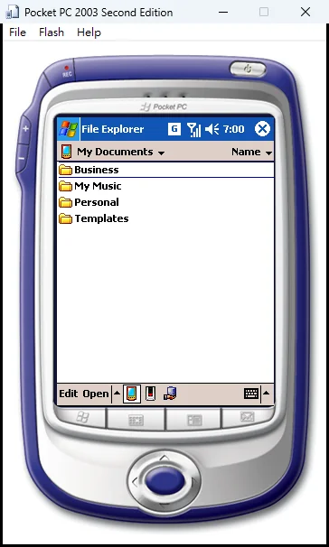
- 點一下 CAB 檔開始安裝。下圖中的檔名是改短後的
PocketEQ_E1，你看到的可能不同。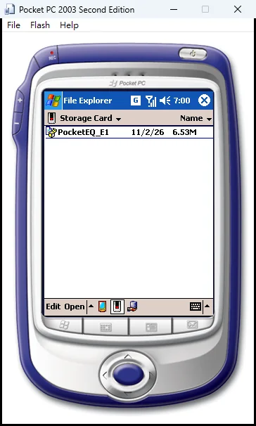
- 安裝時會出現舊版相容提示，點右上角的 ok。等待約 30 秒，直到回到 File Explorer。
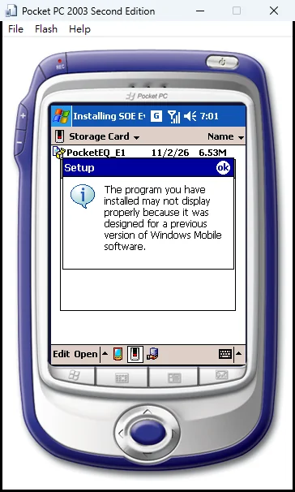
- 確認安裝結果：從 Start → Programs → Games 應該會看到遊戲圖示。
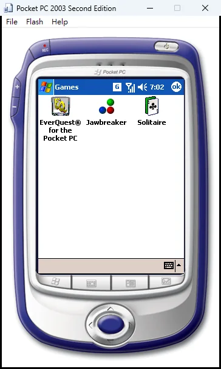
第四步：啟動遊戲
- 點 EverQuest for the Pocket PC 圖示。第一次啟動會要求註冊碼，點右下角的鍵盤圖示輸入後點 OK。
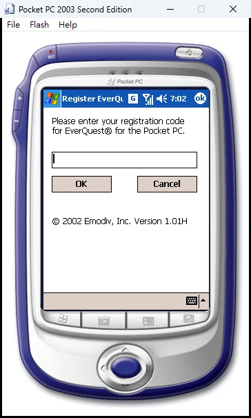
- 接著會出現 Emodiv 標誌。
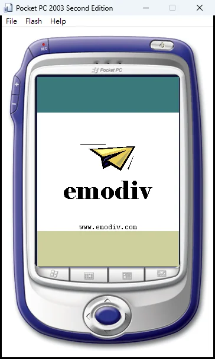
- 在角色選擇畫面，點任一個空位建立角色。
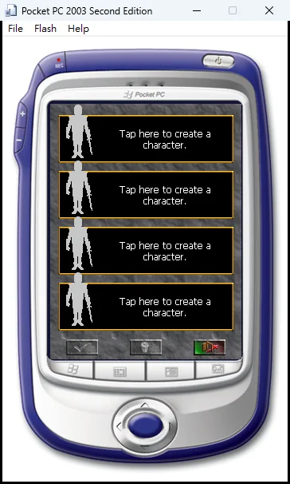
- 在上方選四種職業之一，在羊皮紙區域簽名，再點底部的打勾按鈕。
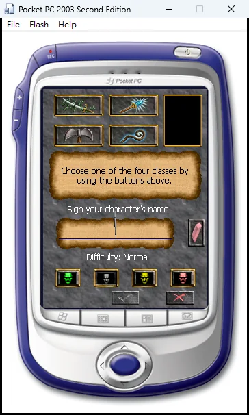
- 遊戲會進入教學關，就代表安裝完成了。
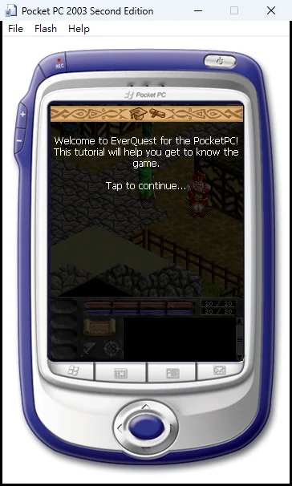
常見問題
| 狀況 | 原因 | 解法 |
|---|---|---|
| 一直停在 Restoring State | 附帶的 ppc2003.dess 還原時卡住 | 關掉模擬器，改用第二步的冷開機指令 |
| Storage Card 看不到新放的檔案 | File Explorer 沒有自動更新 | 點底部左邊的裝置圖示，再點回記憶卡圖示 |
| 找不到 Storage Card | 沒有掛上共用資料夾 | 確認指令有 /sharedfolder SD，而且是在模擬器資料夾執行 |
| 畫面橫向或比例不對 | devemu.dat 寫的是 320×240 | 用本文的指令，模擬器會依 skin 使用 240×320 |
| 使用 CE6 ROM | ROM 沒有 mfcce300.dll | 不要用 wce6.bin，改用 ppc2003.bin |
關掉模擬器前要注意：冷開機的安裝內容可能不會保留，我們還沒有測試存回狀態是否可靠。如果模擬器請你選擇是否儲存，建議先備份整個資料夾再測試。
本文在 Windows 上實測到教學關第一個提示，戰鬥、存檔和音效尚未測試。實測用的是 v1.01H 的 CAB，光碟內的 CAB 是較早的建置且尚未實測。輸入正式註冊碼這一步也沒有實測。